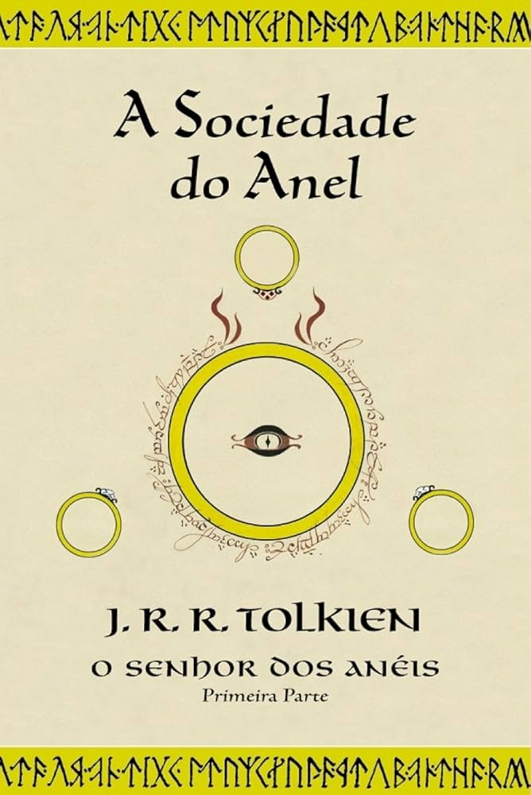

A história começa no pacato Condado, a região rural habitada pelos pequenos hobbits. O jovem hobbit Frodo Bolseiro herda de seu tio Bilbo Bolseiro um misterioso anel dourado. O mago Gandalf, o Cinzento descobre que esse artefato é, na verdade, o Um Anel — o instrumento de poder supremo criado por Sauron, o Senhor do Escuro de Mordor, que busca recuperá-lo para dominar toda a Terra-média. Para evitar a destruição do mundo, Frodo precisa deixar sua vida tranquila e empreender uma jornada perigosa até as Fendas da Perdição, no vulcão Monte Doom, o único lugar onde o Anel pode ser destruído. Ele conta inicialmente com a ajuda de seu leal amigo hobbit Samwise (Sam) Gamgi e dos primos Merry e Pippin. No decorrer da viagem, escapando dos implacáveis Espectros do Anel (Nazgûl), eles chegam ao refúgio élfico de Valfenda. Lá, no Conselho de Elrond, é formada a Sociedade do Anel (ou A Comitiva dos Nove), uma aliança que representa os Povos Livres da Terra-média: